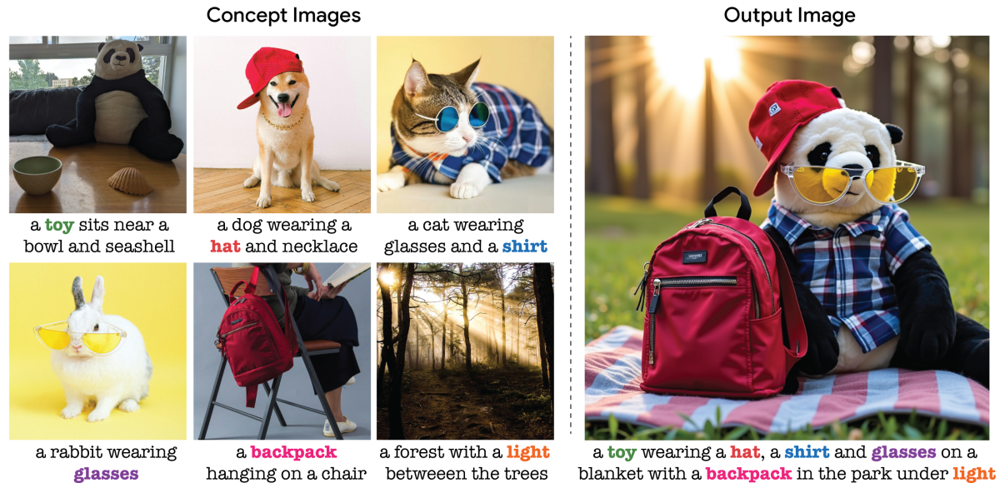

TokenVerse: Versatile Multi-concept Personalization in Token Modulation Space
D. Garibi, S. Yadin, R. Paiss, O. Tov, S. Zada, A. Ephrat, T. Michaeli, I. Mosseri, T. Dekel
SIGGRAPH (Journal) 2025
Best Paper Award
@article{garibi2025tokenverse,
title={TokenVerse: Versatile Multi-concept Personalization in Token Modulation Space},
author={Garibi, Daniel and Yadin, Shahar and Paiss, Roni and Tov, Omer and Zada, Shiran and Ephrat, Ariel and Michaeli, Tomer and Mosseri, Inbar and Dekel, Tali},
journal={ACM Transactions on Graphics (SIGGRAPH)},
year={2025}
}